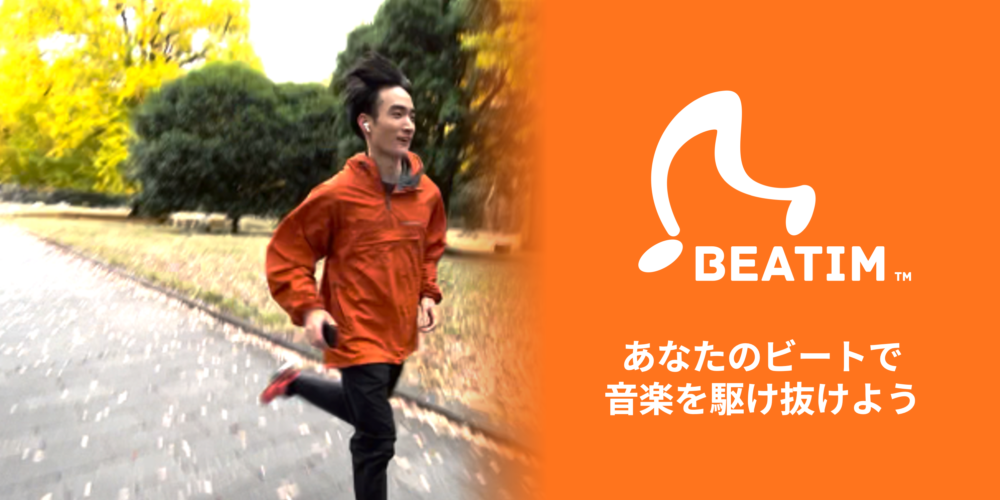

音楽と身体運動を一体化し、人間の活力や潜在能力を引き出すフィットネス音楽アプリ。 A fitness music app that unifies music and movement to draw out human vitality and potential.

Beatim（Beat Immersion）は、音楽と身体運動を一体化してビートに没入させ、人間の活力や潜在能力を引き出すことを目指しています。ランナーのペース支援やウォーキングの意欲向上に取り組み、今後は筋トレやリハビリにも展開していきます。
最初の展開であるランナー支援では、ペース維持が身体感覚だけでは難しく、通知や数値表示では走行体験が途切れてしまう点に着目しました。Beatimは、ランナーのペースをセンシングし、目標ペースとの差に応じて音楽のビートを自然に変化させることで、音楽に乗りながら走り続ける体験を設計しました。
Beatim (Beat Immersion) unifies music and movement, immersing users in the beat to draw out human vitality and potential. It supports runners' pace and motivates walking, and will expand to strength training and rehabilitation.
In its first application, runner support, maintaining pace while running can be difficult when relying only on body sensation, while numerical alerts can interrupt the running experience. Beatim senses the runner's pace and naturally changes the music beat according to the gap from the target pace, helping users keep running with the music.
Beatimの開発と社会実装を目的に「株式会社Beatim」を設立しました(2023年)。2024年に法人を閉じ、以降は個人で開発・配布を続けています。App Storeにてアプリが配布されています。
Beatim Inc. was established in 2023 to develop and socially implement Beatim. The company was closed in 2024, and development and distribution have since continued as an individual developer. The Beatim app currently distributed on the App Store is its first, runner-oriented pace support version.